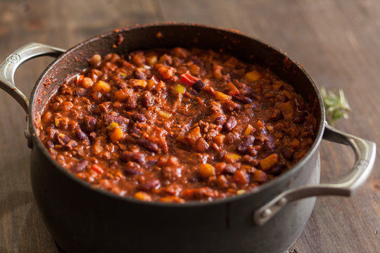

Matt's Elite Chili

Description
I've always been a big fan of chili, especially on cold winter days. One day, many years ago, I decided to experiment and come up with the perfect chili recipe based on things that would make it my own.
Chili is one of those foods that holds a piece of the cook within it. It is a very personal dish that can be unique for anyone that takes the time to make it. This is what I settled on after experimenting with many different ingredients. Sometimes I still change it up and see if I can make additional improvements, but this is how I've been making it for years now.
Ingredients
- 2 lbs ground sausage (hot or mild, depending on what you prefer)
- 60 oz canned diced tomatoes (if you like it spicy, choose one with jalepenos or similar peppers)
- 12 oz canned tomato sauce
- 1 can of black beans
- 1 can of pinto beans
- 1 can of navy beans
- 1 large yellow onion
- 3 cloves garlic
- 2 tbsp olive oil
- 3 tbsp chili powder
- 2 tbsp cumin
- 1 tbsp brown sugar
Steps
- Chop onion, and dice garlic.
- Using medium-high heat, saute olive oil, onion, and garlic in a large pot until the onion starts softening up.
- Add diced tomatoes, tomato sauce, and all three cans of rinsed beans to the pot.
- When the pot comes to a boil, reduce heat to bring pot to a simmer.
- Preheat an additional pan to medium heat.
- Add sausage to preheated pan, and use a spatula or wooden spoon to crumble the sausage as it cooks.
- When the sausage is fully cooked, add it to the pot along with the juices in the pan.
- Add chili powder, cumin, and brown sugar to the pot.
- Simmer the contents of the pot for 1-2 hours, stirring occasionally to prevent it from burning.
- Enjoy your chili!
Home